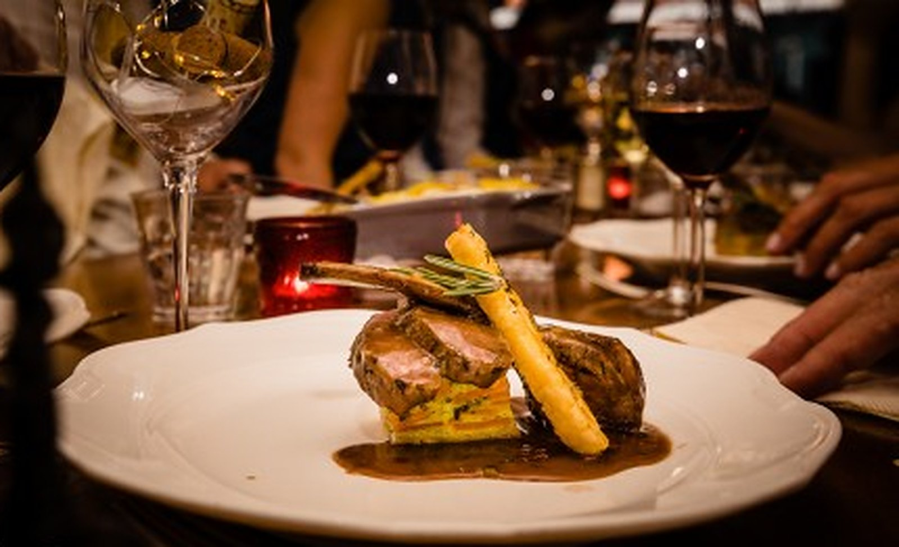
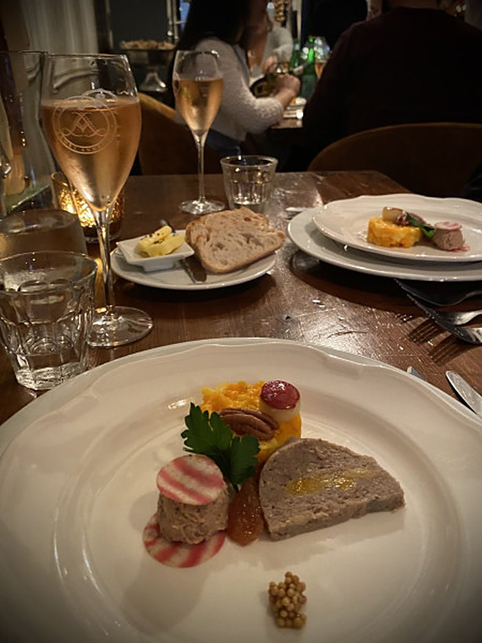
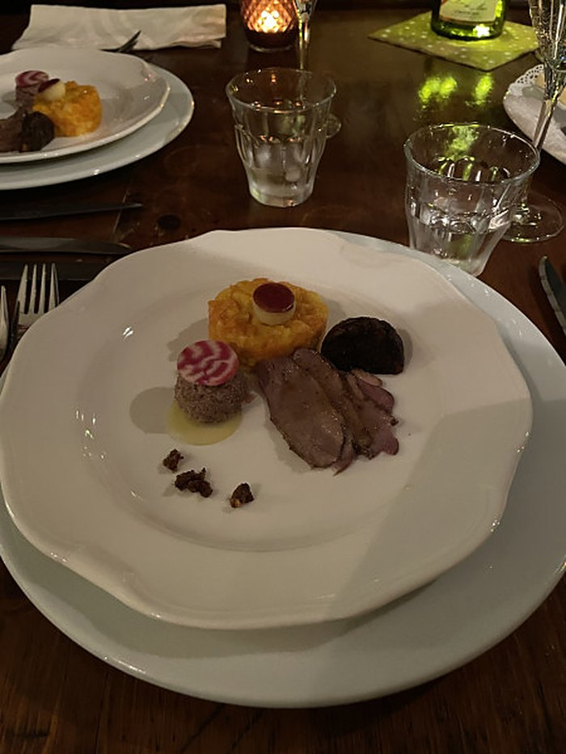
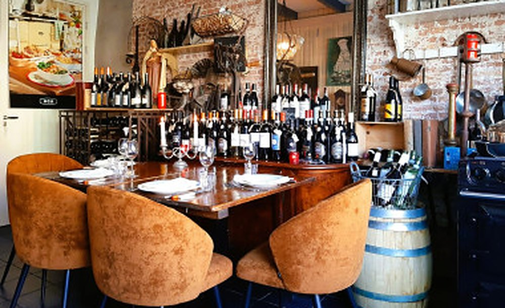
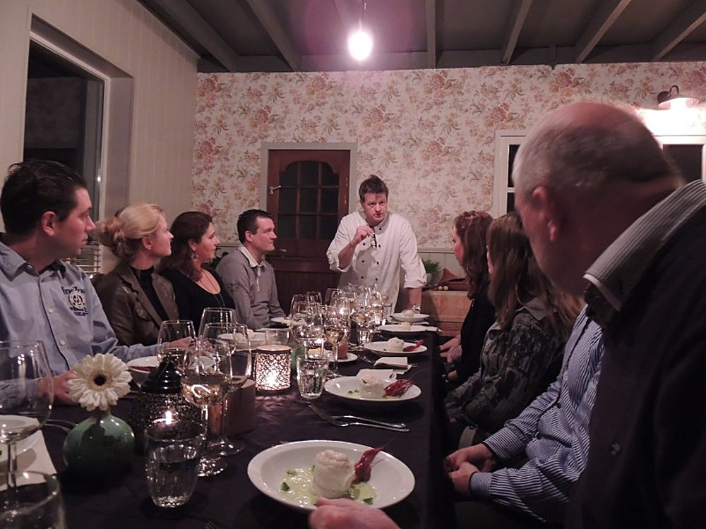
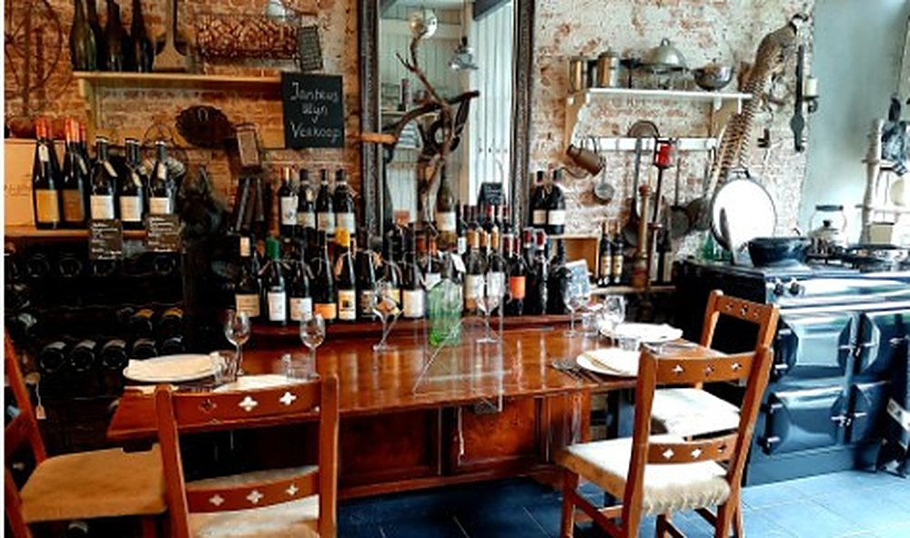
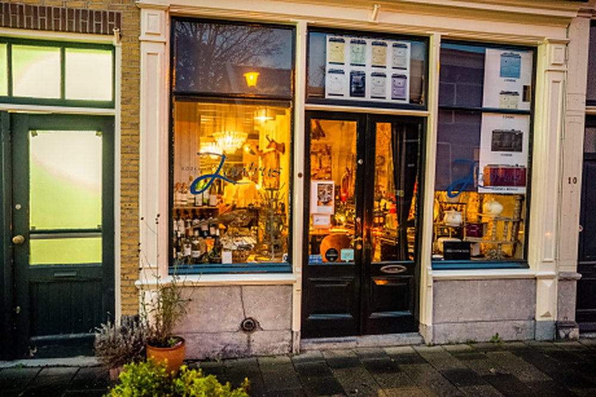
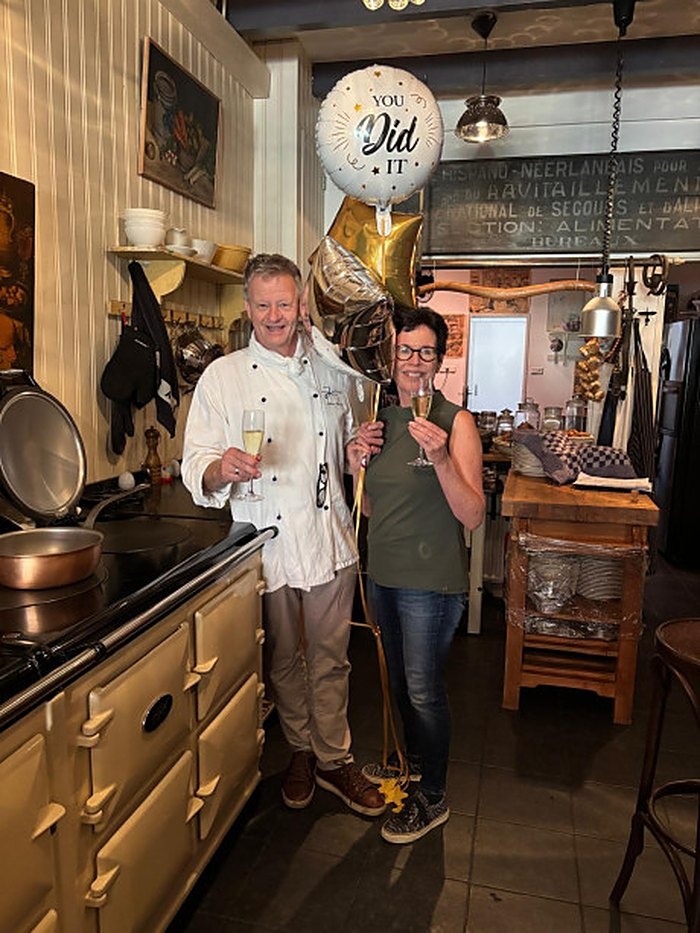
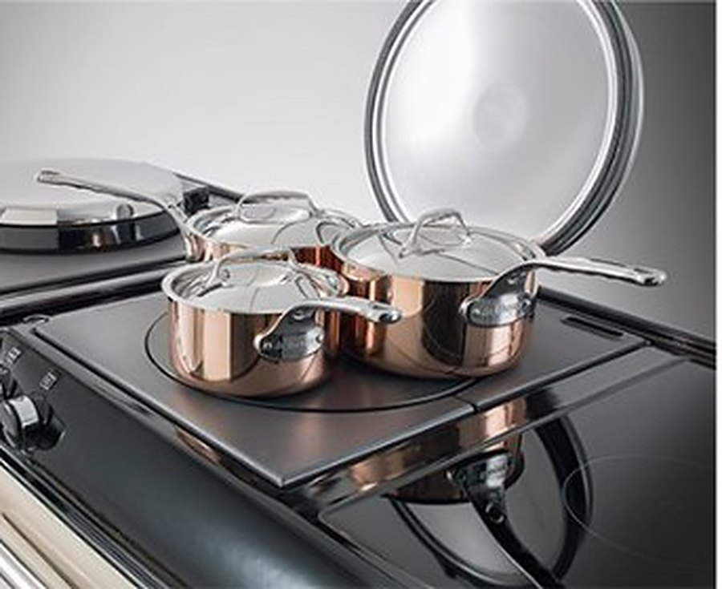
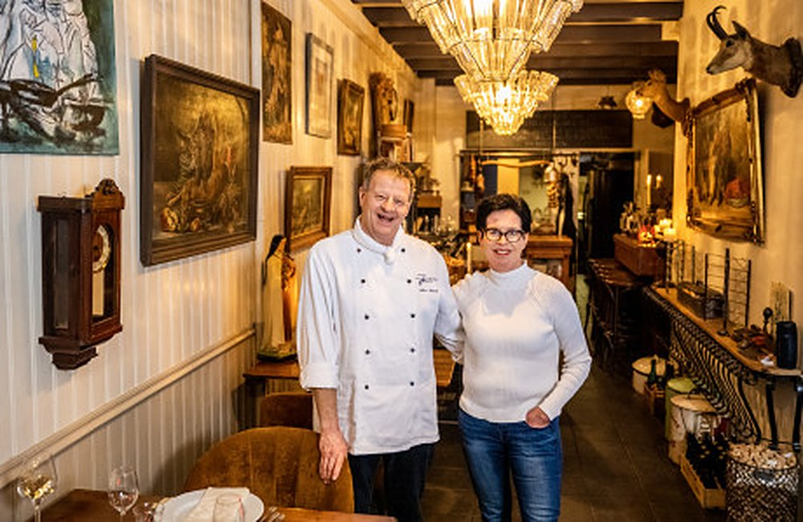

Onze Tafel, Jullie Avond
Een verrassingsmenu van 5 gangen uit de AGA, voor maximaal 13 gasten. Al 30 jaar in ons sfeervolle pand aan de Naaierstraat in Gouda.


Zo gaat een avond bij Jantrus
Je schuift niet zomaar aan: je bent een avond lang onze gast. Arthur kookt met de seizoenen en alleen met pure, dagverse ingrediënten. Marjan zorgt dat het jullie aan niets ontbreekt.
- 18:00 uur: welkomWe beginnen samen, met een feestelijk glas Cava en onder andere Pata Negra.
- Luxe verrassingsmenu van 5 gangenArthur staat alleen in de keuken en kookt op de AGA. Wat er op tafel komt, is een verrassing.
- 3 glazen wijn erbijBijpassende kwaliteitswijn uit het hogere segment.
Primeur: zondag 29 november vroeg aan tafel
Van 15:00 tot 18:00 uur. Bubbels met Arthurs Gravad Lachs, een proeverijmenu en 3 glazen wijn. Vanaf € 92 p.p.
Aan welke tafel wil je zitten?
De Wijntafel, de Chef's Table aan de AGA, de Tijdtafel of de rustige Mariatafel. Laat het ons weten bij je reservering.




Wat onze gasten zeggen
Dankzij onze gasten horen we bij de hoogst gewaardeerde restaurants van Gouda.
"Wat een mooie combinatie van smaken, kleuren en diverse gerechten. Het was voor ons weer een feestje om te genieten van jullie gastvrijheid, vriendelijkheid, professionaliteit en de entourage! Inmiddels al weer 3 keer geweest en alle keren een topniveau!"
Bert en DinyGastenboek"Een parel onder de restaurants in Gouda naar bleek. (…) Het eerste bord was een grote verrassing. Smaakexplosies zoals niet eerder geproefd. En zo ging het door. (…) Kortom, een aanrader als je eens iets anders wilt en op topniveau wilt dineren."
Kees van der PligtGastenboek"Wij stonden op hun reservelijst en hadden dus geluk ! Heerlijke gerechten geproefd met daarbij ook lekkere wijntjes. Zeer sfeervol en gemoedelijke sfeer! Aanrader."
Petra LeenenGastenboekReacties uit ons gastenboek. Scores van TheFork, Google en De Gouden Pollepel.


Het enige AGA-restaurant van Nederland
Arthur kookt elke avond op onze eigen AGA. Daarom verkopen we de fornuizen ook. Geen showroom met verkooppraatjes, maar advies van iemand die er al 30 jaar dagelijks mee kookt.
- Officieel AGA Living Center
- Showroom op afspraak
- Huisbezoek en plaatsing
- Nieuw en gebruikt

Wij zijn Arthur en Marjan
"Bijzonder geworden door gewoon te blijven."
Al 30 jaar maken we in ons restaurant aan de Naaierstraat van elke avond een beleving. Voor ons draait gastvrijheid om de eenvoud van echte aandacht. Exclusief en uniek door kleinschaligheid, in een ongedwongen, informele sfeer.
Reserveer je plek aan onze tafel
We hebben maar 13 plaatsen, dus reserveer vooraf. Stuur Marjan een WhatsApp of vul hieronder je wens in.
Direct contact
Je krijgt bij ons altijd Arthur of Marjan zelf aan de lijn.